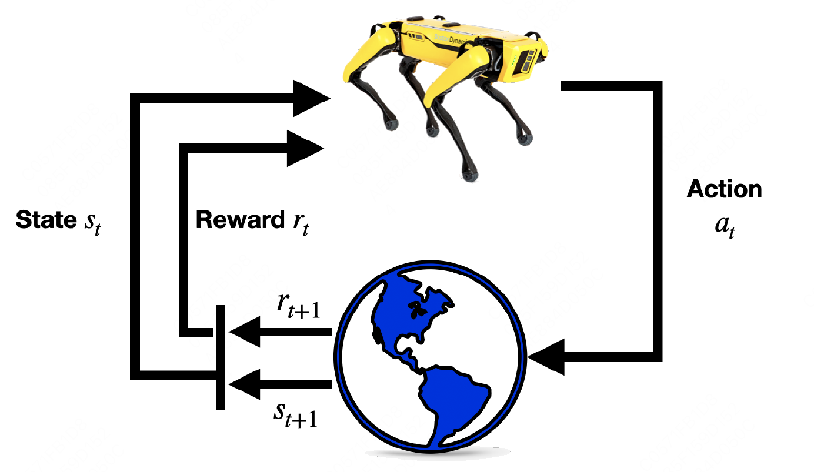

Basic Concepts#
In supervised learning, we saw algorithms that tried to make their outputs mimic the labels \(y\) given in the training set. In that setting, the labels gave an unambiguous “right answer” for each of the inputs \(x\). In contrast, for many sequential decision making and control problems, it is very difficult to provide this type of explicit supervision to a learning algorithm. For example, if we have just built a four-legged robot and are trying to program it to walk, then initially we have no idea what the “correct” actions to take are to make it walk.
In the reinforcement learning framework, we will instead provide our algorithms only a reward function, which indicates to the learning agent when it is doing well, and when it is doing poorly. In the four-legged walking example, the reward function might give the robot positive rewards for moving forwards, and negative rewards for either moving backwards or falling over. It will then be the learning algorithm’s job to gure out how to choose actions over time so as to obtain large rewards.

That is:
Policy: \(\pi(a|s)\)
Enviroment controls the state transition and reward process, they have the Markov property:
Obtain trajectory \((s_{0},a_{0},r_{1},s_{1},a_{1},r_{2},s_{2},a_{2},\dots)\)
Bellman equation#
Discounted return:
State value is the expected value of discounted return, Bellman equation move one-step forward:
The first term by using the law of total expectation:
The second term can be calculated as:
This leads:
Bellman equation can be written in the matrix form:
In terms of the action values:
Bellman optimality equation#
While the ultimate goal of reinforcement learning is to obtain optimal policies, it is necessary to first define what an optimal policy is. The definition is based on the state values.
A policy \(\pi^{\ast}\) is optimal if \(v_{\pi^{\ast}}(s) \ge v_{\pi}(s)\) for all \(s\in\mathcal{S}\) and for all policy \(\pi\).
Exists?
Unique?
If exists, how the obtain?
Bellman optimal equation:
matrix form:
We can show that \(\left \| f(v_{1}) - f(v_{2}) \right \|_{\infty} \le \gamma\left \| v_{1} - v_{2} \right \|_{\infty}\), then by using the contraction mapping theorem, we conclude that there exits one unique solution to the Bellman optimal equation.
Next, we assert that the solution \(v^{\ast}\) of the Bellman optimal equation is the optimal state value, and the corresponding policy
is an optimal policy.
Proof: For any policy \(\pi\), it holds that
Since
we have
Repeated applying the above inequality gives \(v^{\ast} - v_{\pi} \ge \gamma P_{\pi}(v^{\ast} - v_{\pi}) \ge \gamma^{2} P_{\pi}^{2}(v^{\ast} - v_{\pi})\ge \dots\). It follows that